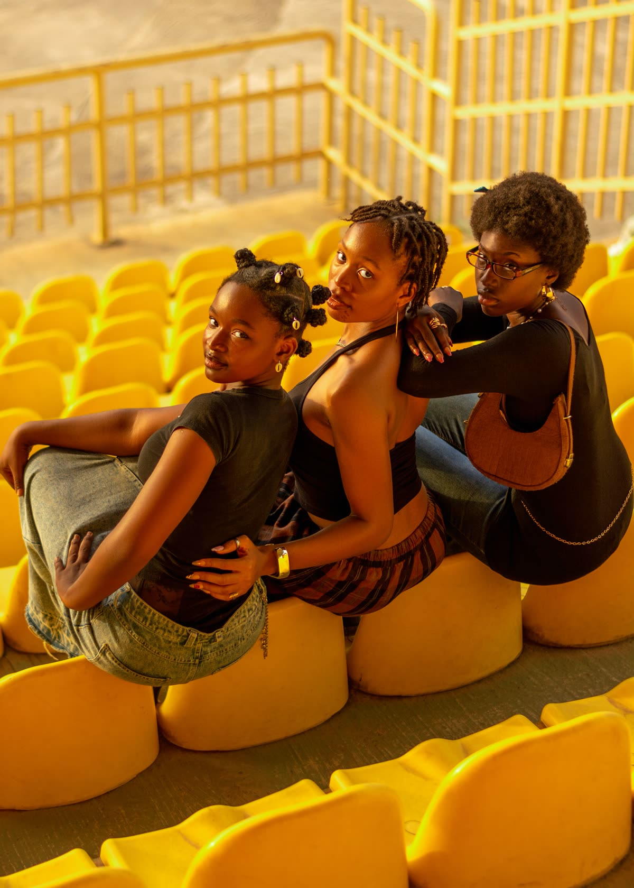

Why I started
The guide I wish I had.
I finished high school in South Africa dreaming of studying medicine. Life had other plans, and I ended up studying software engineering at ALU in Kigali. I never let go of healthcare, though. Today my mission is to build digital tools that make healthcare more affordable for families in Zimbabwe. Along the way I kept recording moments: my first football match in a new city, late nights building apps, hectic days leading a team, and advice from friends. StoryCast is where I share them, so the next person figuring out adulthood feels a little less alone.
Who it's for
StoryCast is for anyone stepping into adulthood: students about to leave home, first-years trying to find their feet, people teaching themselves to code, and anyone who has wondered how to make friends after school. If you're figuring life out as you go, this is for you.

Built for everyone
-
Captions and transcripts
Every video has captions you can switch on, and every story has a full written transcript. Watch with the sound off, or read instead.
-
Screen reader friendly
Pages use clear headings, labelled buttons and image descriptions, so screen readers can read every page in a sensible order.
-
Keyboard friendly
Move through the whole site with Tab, Shift+Tab and Enter. A bold outline always shows where you are, and a skip link jumps straight to the content.
How to engage
- Pick a story. Browse the featured stories on the home page or choose a topic.
- Watch, listen or read. Press play and turn on captions with the CC button, or open the full transcript below the video.
- Say hi. Got a story or a question? Find me on GitHub or Instagram. The links are in the footer.